It is hard to find a more productive half hour of television for English learners than the Season 3 Friends episode in which Ross and Rachel’s relationship falls apart for the first time. The episode gave the world the endless “we were on a break” debate, and it also happens to be stuffed with idioms, phrasal verbs, and emotional vocabulary that native speakers reach for every single day. A study deck titled The Morning After: Love, Secrets, and English Vocabulary turns that single episode into a complete lesson, and its opening board promises to help learners “Master real-world English through the ultimate 90s sitcom breakup.”
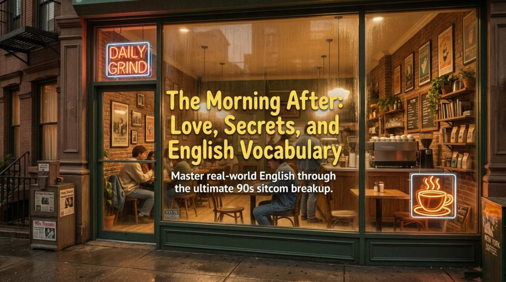
The deck reads like a curated AI study pack, and a small “Gemini Notebook” watermark in the corner reveals that an AI notebook tool helped assemble it. Every board is quoted directly below, so the full original wording of the lesson stays intact — definitions, dialogue, and the deck’s own quiz rounds included. Pay attention to how the material weaves language notes into the plot, because that weaving is exactly what makes vocabulary stick. Notice as well that the story does the heavy lifting: the more dramatic the moment, the more memorable the expression attached to it.
The lesson starts with the famous setup, and the deck states it plainly: “Ross and Rachel had a massive argument about Rachel’s coworker, Mark. Rachel suggested they take a break. Ross stormed out, got drunk, and slept with a woman named Chloe from the local copy center.” Every word of that summary matters for the episode’s central vocabulary. The phrase “to take a break” is defined on the same board as “To temporarily pause a romantic relationship,” and catalyst is defined as “An event that causes a dramatic change.” The key point is that the argument about Mark is presented as the catalyst: it triggers the pause, the pause triggers the misunderstanding, and the misunderstanding triggers everything else.
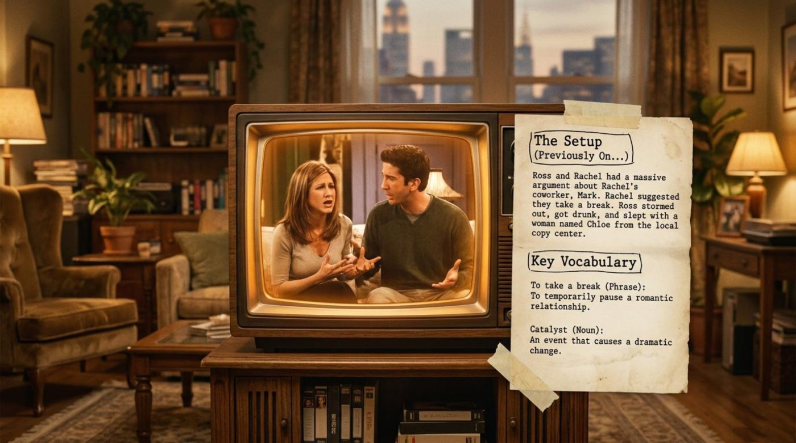
The morning after brings the panic, and the deck devotes a “Vocabulary Spotlight” board to it. An answering machine is described as “A retro device that records voice messages,” with the crucial detail that “Rachel left a message saying she wants to get back together!” A one-night stand is defined as “A single sexual encounter with no expectation of a relationship,” which the deck bluntly labels “Ross’s mistake with Chloe.” The idiom “cover your tracks” means “To hide evidence of what you have done,” and the board ties it to “Ross desperately trying to hide Chloe behind the door.” It should be noted that all three expressions describe the same sixty seconds of screen time from three different angles: the device, the mistake, and the cover-up.
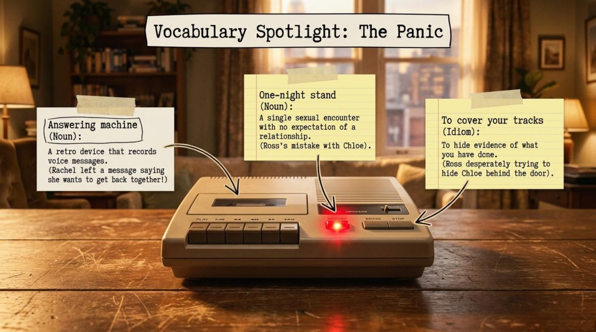
The secret then travels, and the deck maps its journey as a gossip trail with a playful title: “One Degree of Separation.” Chloe confesses, “I tell Isaac everything.” The trail continues through Isaac’s sister — the board notes “Isaac’s sister is Jasmine” — who works alongside Rachel’s regular barista, so the advice becomes “You should probably talk to my roommate...” The board then announces the result in bold type: “Gunther tells Rachel before Ross can stop him. The secret is out.” Interestingly, the chain has only three links, which is the deck’s quiet joke on the “six degrees of separation” idea: inside a sitcom coffee shop, secrets need far fewer.
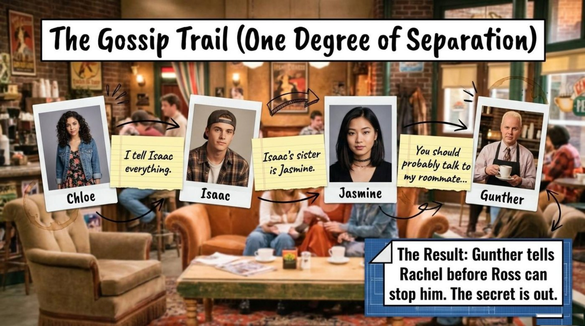
The vocabulary of that journey gets its own board, “Idioms of Secrecy.” “Spill the beans” is defined as “To reveal a secret,” and the deck applies it directly: “Gunther spilled the beans to Rachel.” “Word of mouth” means “Information passed verbally from person to person,” illustrated by the line “The rumor traveled by word of mouth.” “Keep it under wraps” means “To keep something secret,” and the board adds the painful epilogue that “Ross tried to keep his mistake under wraps, but failed.” Remember that these three idioms form a natural set — one for leaking, one for the channel, and one for the failed concealment — and practicing them together as a story works far better than memorizing them separately.
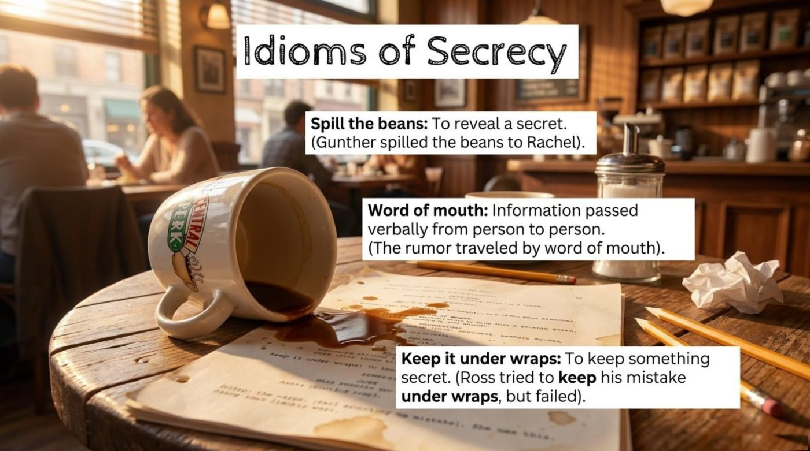
The lesson then pivots to the episode’s comic second storyline, labeled “The B-Plot: The Pain of Beauty.” The deck sets the scene: “Monica and Phoebe use an organic leg-waxing product called Waxine. It hurts so much they scream, causing Chandler and Joey to rush in with a frying pan and tea kettle thinking they are under attack.” The board’s “Hyperbolic Vocabulary” section defines “agony” as “Extreme physical or mental suffering,” “threshold of pain” as “The maximum level of pain a person can tolerate,” and “pain-free” as — the deck’s dry editorial comment — “A false advertising promise!” This subplot is a gift for learners because exaggeration is the corner of English where the funniest, most vivid words live.
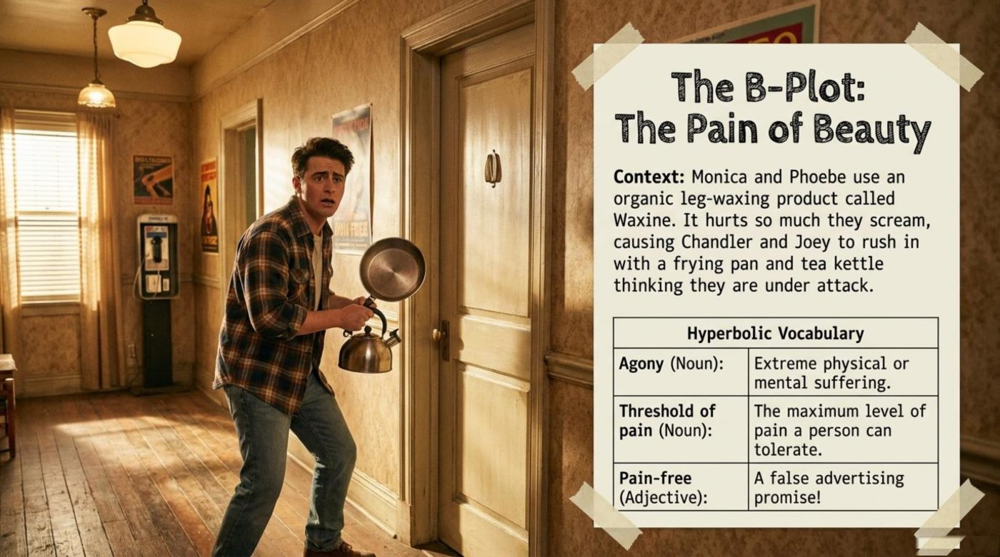
Meanwhile, the main plot traps four innocent bystanders. The deck describes their predicament under the heading “Trapped in the Tension”: “The four friends are starving, but leaving the bedroom means revealing they were eavesdropping on the breakup.” Along the way it defines “eavesdrop” as “To secretly listen to a conversation” and “awkward” as “Causing or feeling embarrassment or inconvenience.” Pay attention to how physically the friends hug the door — the scene makes “eavesdropping” visible rather than abstract, and the hunger-versus-embarrassment trade-off is a perfect miniature of the word “dilemma.”
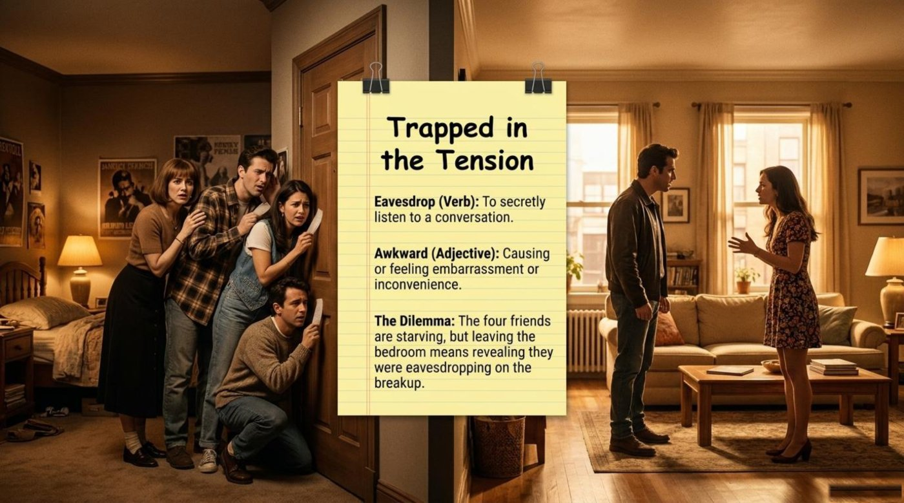
The deck also harvests phrasal verbs from the same scenes. “Break up” means “To end a romantic relationship,” with the episode’s anguished line “I thought we were broken up!” “Make up” means “To forgive each other and become friendly again after an argument.” “Bail on” means “To abandon someone or leave a situation when things get difficult,” heard in the accusation “You’re the one who bailed on us.” “Work out” means “To resolve a problem,” and the board ends on a hopeful note: “There is nothing so big that we can’t work past it together.” It is important to understand that these four little verbs carry the emotional grammar of an entire relationship — its end, its repair, its betrayals, and its hope.
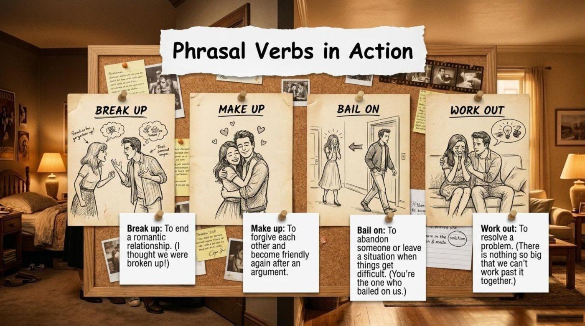
The confrontation itself is laid out like a courtroom summary on a board titled “The Ultimate Argument: Ross vs. Rachel.” Ross’s core argument is quoted in three words — “We were on a break!” — with the deck’s gloss that “the relationship was temporarily dead,” and his defense that “The encounter meant nothing; it was a mistake driven by grief.” Rachel’s side is just as sharp: “You betrayed me,” and “Even on a break, sleeping with someone else immediately destroys trust.” Each perspective is paired with a power word: “justify” (“To prove something is right or reasonable”) for Ross, and “jeopardize” (“To put something important at risk”) for Rachel. Notice that the lesson turns a screaming match into structured debate — a model any learner can copy when defending an opinion in English.
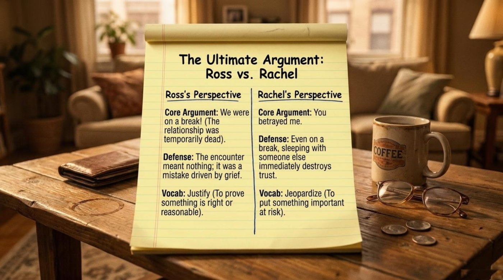
The cultural heart of the quarrel gets its own board: “Cultural Context: The Technicality.” It opens with Rachel’s acidic line: “You think you’re gonna get out of this on a technicality?” The definitions around it are pure gold for advanced learners: “Technicality (Noun): A small, formal rule or detail that is used to avoid a penalty, often ignoring the moral reality of a situation,” and “Loophole (Noun): An ambiguity in the rules that allows someone to escape consequence.” The board then spells out the deeper clash: “Ross uses logic (they were technically broken up) to defend himself, while Rachel argues that emotional betrayal overrules technical definitions.”
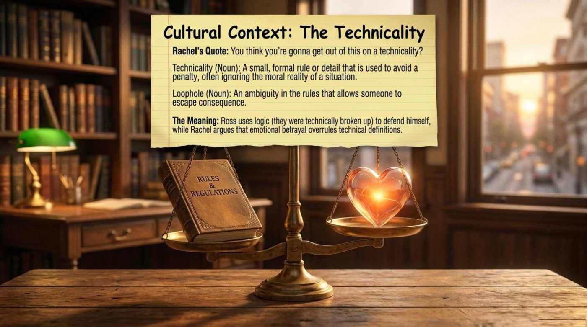
The fight ends in the episode’s most quoted exchange, and the deck gives it a whole board: “The Climax: The Final Blow.” Ross pleads, “This can’t be it.” Rachel answers, “Then how come it is?” The emotional vocabulary attached to the moment is heavy by design: “devastated” is defined as “Completely destroyed or deeply shocked and saddened,” and “unforgivable” as “So bad that it cannot be pardoned or excused.” The board’s final line doubles as the lesson’s quiet thesis: “The realization that an action has changed everything, forever.”
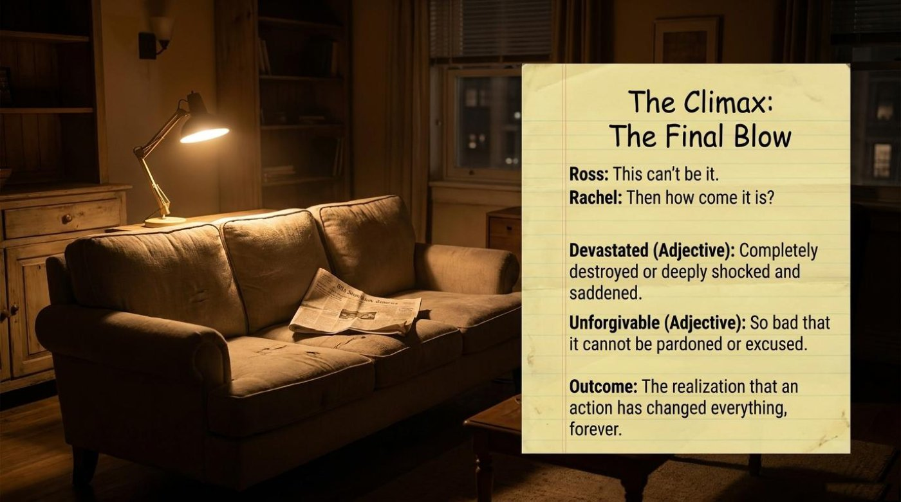
This is where the episode pays rent. The deck is, at heart, a vocabulary course in disguise: relationship phrases, secrecy idioms, hyperbole, courtroom nouns, and phrasal verbs all arrive with definitions and in-context examples. Each key item below is unpacked in plain language — its literal meaning, its figurative meaning inside this story, the example the material provides, and the way the lesson itself explains the word. The highlighted terms in the text above and below carry quick definitions too: hover over them on a desktop screen, or tap them on a phone.
Literal meaning: to pause an activity for a while before returning to it.
Figurative meaning in the story: to temporarily pause a romantic relationship without formally ending it — a polite phrase hiding an enormous ambiguity.
Example from the material: “Rachel suggested they take a break.” That one suggestion launches the entire disaster, which is why the deck lists it first.
How the lesson explains it: the deck defines the phrase as “To temporarily pause a romantic relationship” and immediately pairs it with “catalyst,” the event that causes a dramatic change — the lesson’s way of showing that the pause itself was the story’s engine.
Literal meaning: in chemistry, a substance that speeds up a reaction without being consumed.
Figurative meaning in the story: any event that sets a dramatic chain reaction in motion.
Example from the material: the argument about Mark and the drunken night that follows function as the catalyst of the whole episode; without them, there is no secret, no gossip trail, no three a.m. argument.
How the lesson explains it: the deck defines “catalyst” simply as “An event that causes a dramatic change,” placing it beside the setup so learners connect the abstract word to a concrete plot point.
Literal meaning: literally “one night” — a single evening.
Figurative meaning in the story: a casual encounter with no future and no expectations, usually later regretted.
Example from the material: “(Ross’s mistake with Chloe)” — the deck uses the episode itself as the example sentence.
How the lesson explains it: the board defines it as “A single sexual encounter with no expectation of a relationship,” and the parenthetical gloss teaches something extra: the collocation “one’s mistake with someone” is how English assigns blame gently.
Literal meaning: to hide the footprints you leave while walking, as spies and fugitives do.
Figurative meaning in the story: to conceal the evidence of something you have done wrong.
Example from the material: “(Ross desperately trying to hide Chloe behind the door)” — a physical, visual cover-up performed in real time.
How the lesson explains it: the board defines it as “To hide evidence of what you have done,” and the image of Chloe behind the door makes the metaphor literal again: tracks, doors, hidden people.
Literal meaning: to knock over a container of beans — an accident nobody can undo.
Figurative meaning in the story: to reveal a secret, especially suddenly or carelessly.
Example from the material: “Gunther spilled the beans to Rachel.” Gunther speaks before Ross can stop him, and the plot detonates.
How the lesson explains it: the deck defines “Spill the beans: To reveal a secret” and attaches Gunther’s name to it, turning one idiom into a character beat.
Literal meaning: words traveling from one mouth to another ear.
Figurative meaning in the story: the informal channel through which news, rumors, and reputations move.
Example from the material: “The rumor traveled by word of mouth.” The sentence doubles as the deck’s description of the gossip trail itself.
How the lesson explains it: the board defines it as “Information passed verbally from person to person,” right next to “spill the beans” and “keep it under wraps,” so the three idioms read as one connected system of leaking, traveling, and hiding.
Literal meaning: historically, to stand inside the “eavesdrop” — the strip of ground where rain drips from a roof’s edge — close enough to a wall to hear what happens inside.
Figurative meaning in the story: to listen in on other people’s private conversation, usually while hiding.
Example from the material: “The four friends are starving, but leaving the bedroom means revealing they were eavesdropping on the breakup.” The confession would be worse than the hunger.
How the lesson explains it: the deck defines “Eavesdrop (Verb): To secretly listen to a conversation” and then builds a full dilemma around the word, so learners feel the social cost of being caught doing it.
Literal meaning: a small detail within a set of formal rules.
Figurative meaning in the story: a legal-style escape hatch someone uses to dodge blame while everyone knows the deeper truth.
Example from the material: “You think you’re gonna get out of this on a technicality?” Rachel’s question names Ross’s entire defense strategy in eight words.
How the lesson explains it: the board defines “Technicality (Noun): A small, formal rule or detail that is used to avoid a penalty, often ignoring the moral reality of a situation,” and adds its twin “loophole” — “An ambiguity in the rules that allows someone to escape consequence.”
Several smaller gems round out the lesson, and each one is immediately reusable in daily conversation.
The flip-cards below compress the ten most useful terms into a fast drill. Each card shows the term and a teaser on the front, and the literal meaning, the contextual meaning, an example from the material, and a short note on why it matters on the back. Click or tap a card, or press Enter when it is focused, to flip it. The button flips the whole set at once.
The deck does more than list words; it repeatedly turns objects from the episode into symbols, and those symbols organize the vocabulary. Four of them deserve a closer look, because they carry the lesson’s deeper message about how English encodes emotion.
The humble answering machine is the episode’s ticking bomb, and the deck treats it as a character: “A retro device that records voice messages. (Rachel left a message saying she wants to get back together!)” The machine’s significance is timing. Ross hears the message only after the mistake has already happened, and from that moment he is not managing the present but racing to rewrite the past. For learners, the machine is a small masterclass in how English handles regret and urgency — “she wants to get back together,” “get back,” “before Ross can stop him” — language locked to irreversible moments. It is also a cultural word: any learner who watches older films and series will keep meeting analog devices, and knowing their names unlocks whole scenes.
The cultural-context board is drawn as an actual set of scales, with a book labeled “Rules & Regulations” on one pan and a glowing heart on the other. The deck’s interpretation is explicit: “Ross uses logic (they were technically broken up) to defend himself, while Rachel argues that emotional betrayal overrules technical definitions.” This single image explains why the episode became a permanent pop-culture debate, and it hands learners a reusable frame for arguments: logic words on one side — “justify,” “technicality,” “loophole” — and loyalty words on the other — “betray,” “trust,” “unforgivable.” The metaphor teaches that an argument is not a shouting match but a weighing of values, and the vocabulary follows the values.
The most subtle symbol in the material is a pizza ordered at three in the morning. The short-answer board tells it plainly: “During the 3:00 AM argument, Rachel orders a pizza. Ross asks for no anchovies. Rachel orders extra anchovies and asks them to chop them into the sauce.” The deck then asks readers to reflect on what this petty act symbolizes about Rachel’s emotional state and the relationship in that exact moment, and it points to the words “Spite, Tension, and Retaliation.” The significance is worth spelling out: when a relationship is healthy, a food preference is trivial; when trust is broken, the same preference becomes a weapon. Small actions reveal big ruptures, and English has a rich petty-vocabulary — “spite,” “petty,” “retaliation” — precisely because humans fight through details.
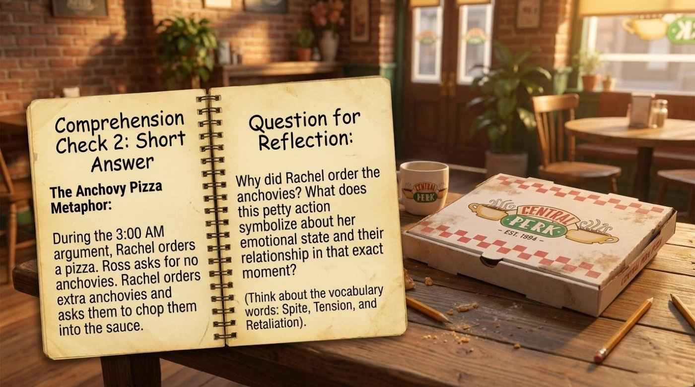
The deck closes its story analysis with Joey’s absurd invention, the “Take Notice Walk,” and names the mechanism behind it: “Mood Whiplash (Noun): A rapid, extreme shift in tone (e.g., from crying over a breakup to a silly physical joke).” The walk matters because it shows how the episode survives its own heaviness: every emotional peak is followed by a deliberate, ridiculous valley. For learners, this is listening-comprehension gold. Recognizing mood whiplash trains the ear for sudden tone changes in fast dialogue, and it explains why sitcom learners often understand the jokes but miss the plot — the plot lives in the valleys between the jokes, and the deck’s vocabulary boards make sure those valleys are also studied.
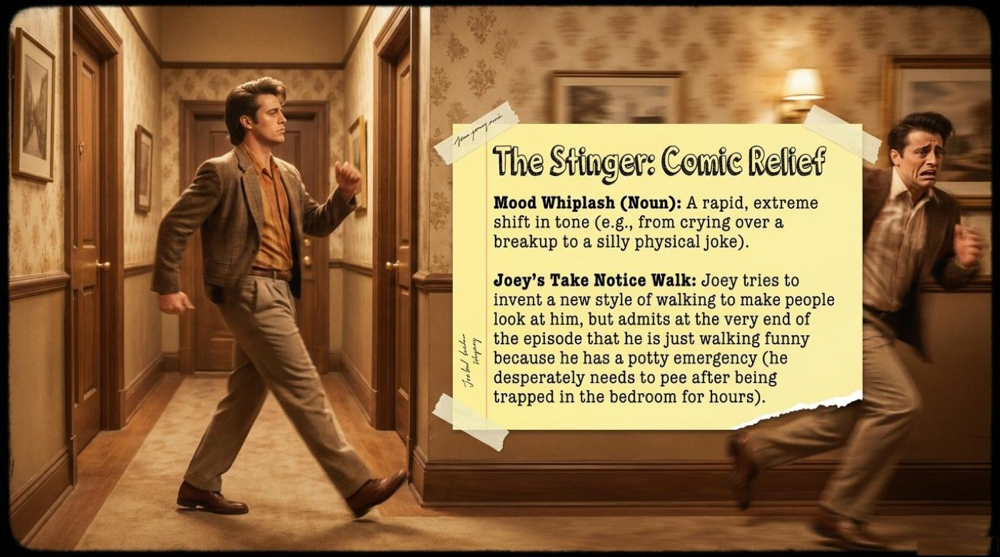
The deck includes its own review round, a blackboard of true-or-false statements that test the plot details behind the vocabulary. The statements cover Joey and Chandler’s advice to Ross, Ross’s race to stop Gunther, the Waxine promise, and the question of intent behind Ross’s loophole defense. The deck answers every item itself, in its own handwriting-style commentary, which makes the round a reliable self-check before moving on.
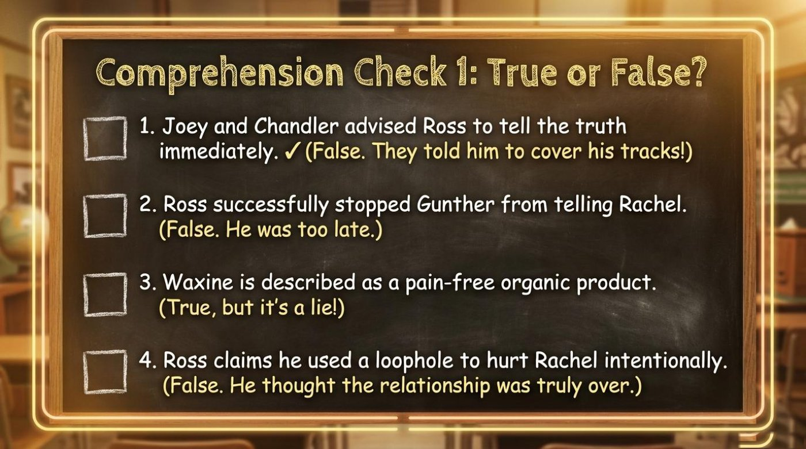
The interactive quiz below rebuilds that round and extends it with vocabulary-in-context and fill-in-the-gap items drawn from the boards above. Every answer is graded instantly with a short explanation, the dots at the top track the journey, and a floating badge announces each hit and miss. The final panel shows the score and offers a full reset, so the round can be replayed until the vocabulary feels automatic. Choose the best option for each item and watch the score grow.
The final board sends learners off with a summary that reads like a graduation speech: “You have successfully navigated the trail, survived the Waxine, and analyzed one of television’s most famous breakups.” Then it lands the lesson’s core message in a single sentence: “Remember: In English, relationships aren’t just about knowing the vocabulary, they’re about understanding the emotion behind the words. Just don’t hide behind a technicality!” That sentence is worth framing. It states the difference between a dictionary and a conversation: “take a break” is harmless on paper, and devastating in a particular tone of voice, at a particular moment, in a particular apartment.
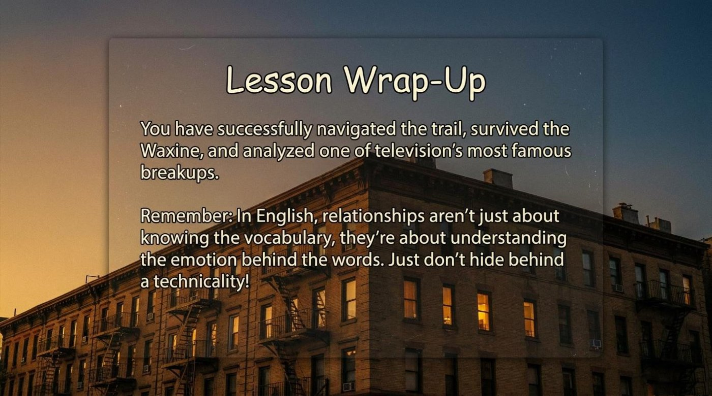
The main takeaway for language learners is to study words where emotions live. A single episode supplied more than twenty usable expressions precisely because every one of them arrived attached to panic, gossip, pain, spite, or heartbreak. The practical path forward is straightforward: rewatch the episode with the boards in mind, retell the plot aloud using at least ten of the expressions from this article, replay the quiz until the score is perfect, and try the interactive game at the top of the page for one more round of practice. Vocabulary that survives a story survives in memory, and very few stories survive the morning after quite like this one.